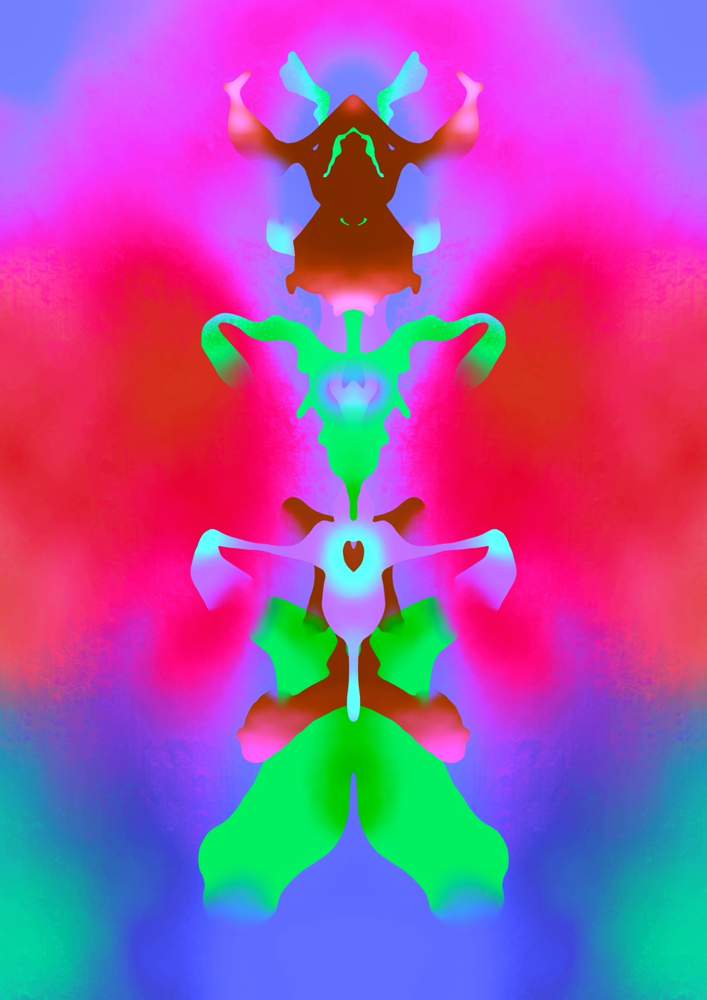
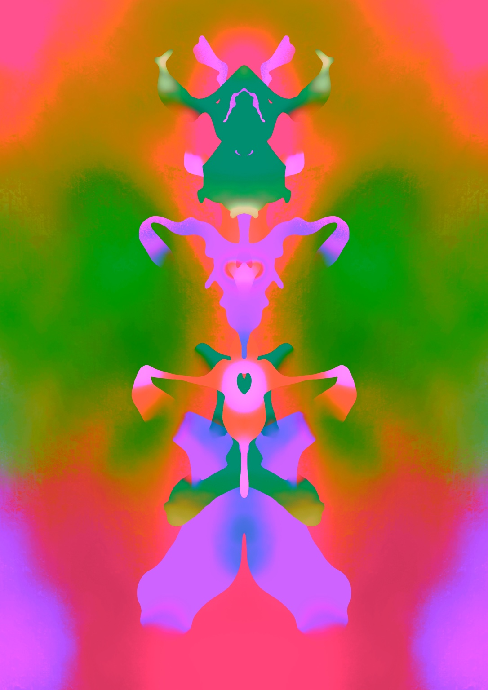

ABSTRACT EXPRESSION
PITUITARY.
脳下垂体をテーマにした抽象的なデジタルアート作品です。鮮やかな色彩と左右対称の形を使い、身体の内部にある器官を独自のイメージで表現しました。

01 / 脳下垂体

02 / COLOR VARIATION
脳下垂体をテーマにした抽象的なデジタルアート作品です。鮮やかな色彩と左右対称の形を使い、身体の内部にある器官を独自のイメージで表現しました。

01 / 脳下垂体

02 / COLOR VARIATION